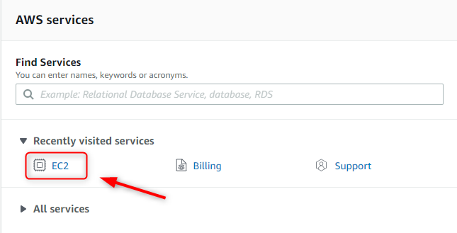
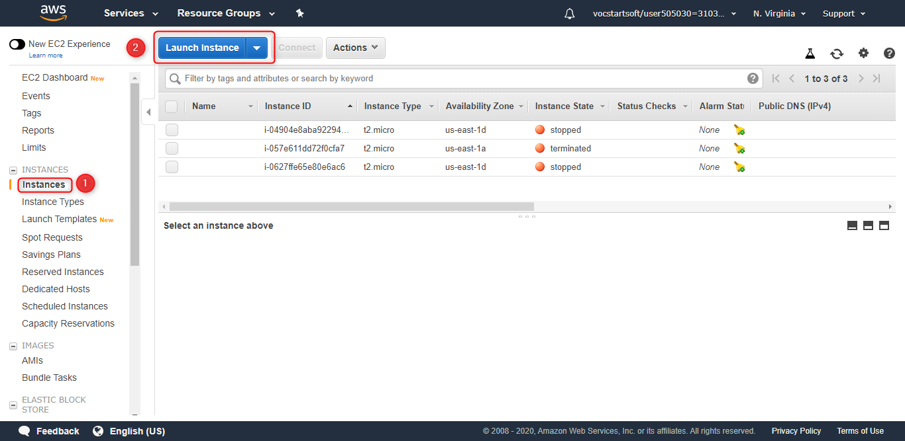
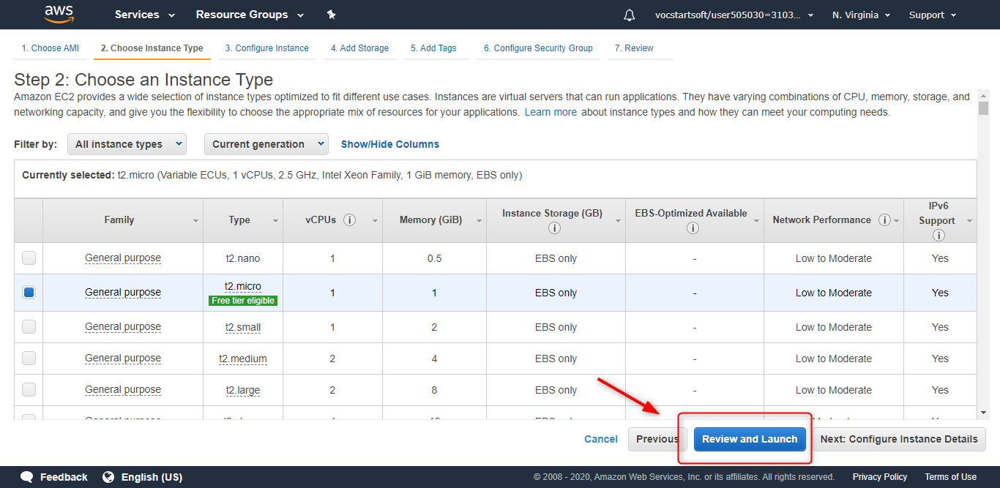
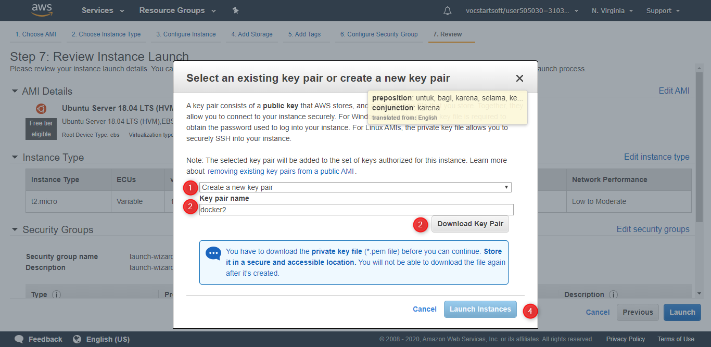
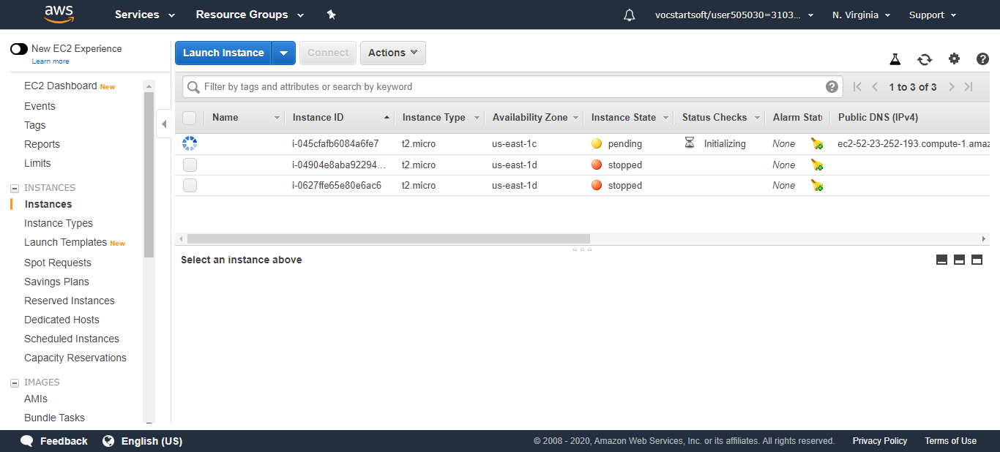
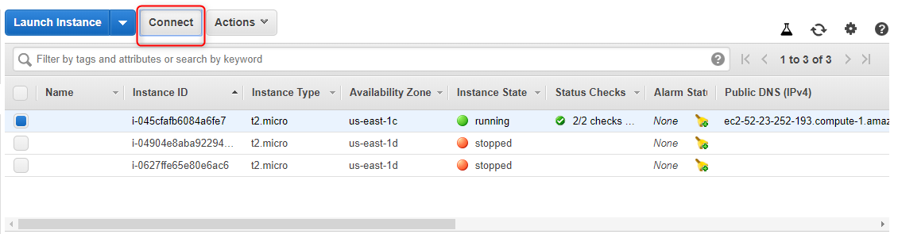
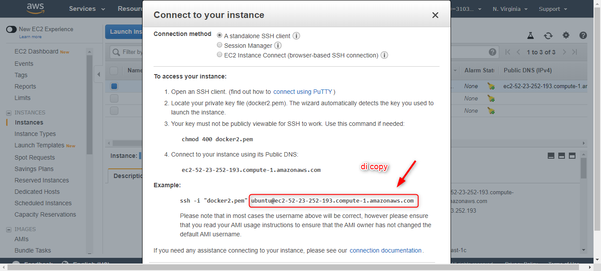
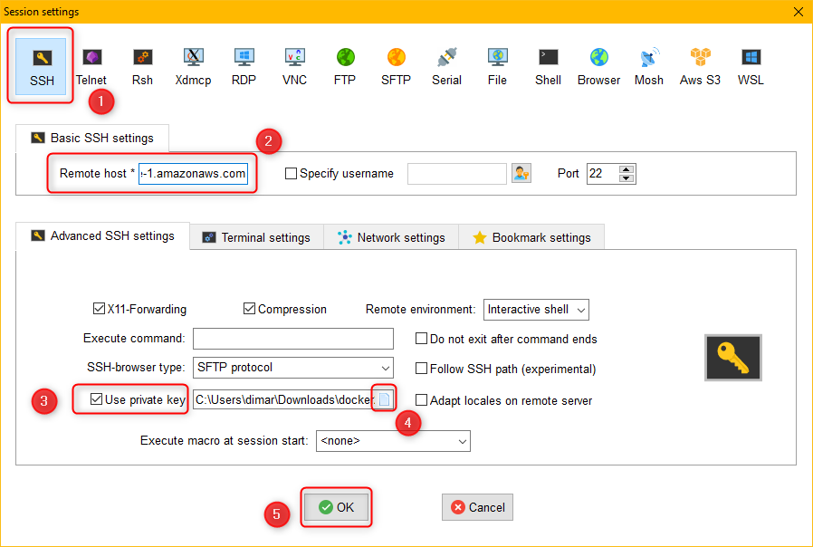
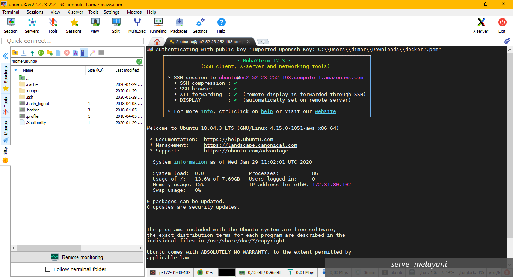

Dokumentasi AWS EC2
by. Dimar Hanung P. | Smk Telkom Pwt
Installasi
langkah langkah:
- masuk ke aws console, lalu pilih ec2

- pilih tab instance, lalu klik launch instance

- pilih os yang akan di buat, lalu klik select
- pilih spesifikasi sesuai kebutuhan, untuk custom bisa klik next configure instance, dan untuk configurasi yang rekomendasi langsung saja klik reveiw and lunch

- pastikan lagi, lalu klik launch
- buat ssh key, lalu download (jangan sampai hilang karena tidak bisa di download lagi)

- tunggu sampai status running dan vps siap digunakan

- klik connect

- perhatikan bagian example

- buka mobaXterm, klik session

- klik ssh
- paste yang tadi dicopy
- centang use private key
- cari nama ssh key yang tadi didownload
- klik ok
- sudah connect

z